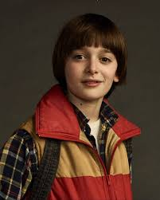

Stranger Things is an American science fiction-horror web television series created for Netflix by The Duffer Brothers, set in the fictional town of Hawkins, Indiana, in the 1980s. The first season, set in 1983, focuses on the investigation into the disappearance of a young boy named Will Byers amid supernatural events occurring around the town, including the appearance of a girl with telekinetic abilities who helps Will’s friends in their own search. The second season, titled Stranger Things 2, is set a year after the first, and deals with attempts of the characters to return to normal and consequences that linger from the first season, as well as adding new characters such as Max Mayfield and her stepbrother Billie Hargrove, and Joyce’s new love interest Bob. The third season, Stranger Things 3, is set in summer 1985, deals with the young friends growing out of their childhoods and facing new threats, and adds new characters such as Steve's coworker Robin. The first season, consisting of eight episodes, was released on Netflix on July 15, 2016; the second season of nine episodes was released on October 27, 2017; and the third season of eight episodes was released on July 4, 2019.
